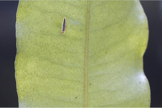
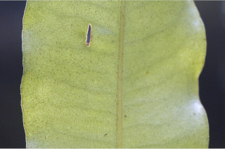

Small trees up to 6 m tall.
6 ಮೀ. ಎತ್ತರದವರೆಗಿನ ಸಣ್ಣ ಮರಗಳು.
Small trees up to 6 m tall.
சிறியமரங்கள் 6 மீ. உயரம் வரை வளரக்கூடியது.
Branches horizontal; young branchlets subterete, densely scaly.
ಕವಲುಗಳು ಮುಖ್ಯ ಕಾಂಡದ ಕೋನಕ್ಕೆ ಸಮಕೋನದಲ್ಲಿರುತ್ತವೆ;ಎಳೆಯ ಕಿರುಕೊಂಬೆಗಳು ಉಪ-ದುಂಡಾಗಿದ್ದು ದಟ್ಟವಾಗಿ ಶಲ್ಕೆಗಳಿಂದ ಆವರಿಸಿಕೊಂಡಿರುತ್ತವೆ.
Branches horizontal; young branchlets subterete, densely scaly.
கிளைகள் நிலத்திற்கு கிடைமட்டமானது; சிறியநுனிக்கிளைகள் குறுக்குவெட்டுத் தோற்றத்தில் வளையமானது, அடர்த்தியாக செதில்களுடையது.
Leaves simple, alternate, spiral; petiole 0.5-0.7 cm long, planoconvex in cross section, scaly when young; lamina 6-13 x 3.8-4 cm, narrow elliptic, apex acuminate with blunt tip, base cuneate, margin entire, transparent gland dotted; midrib slightly canaliculate above; secondary_nerves 16-20 pairs, slender; tertiary_nerves obscure.
ಎಲೆಗಳು ಸರಳವಾಗಿದ್ದು ಪರ್ಯಾಯ ಮತ್ತು ಸುತ್ತು ಜೋಡನಾ ವ್ಯವಸ್ಥೆಯಲ್ಲಿರುತ್ತವೆ; ತೊಟ್ಟುಗಳು ಅಂದಾಜು 0.5 -0.7ಸೆಂ.ಮೀ. ಉದ್ದವಿದ್ದು ಅಡ್ಡ ಸೀಳಿದಾಗ ಸಪಾಟ ಪೀನ ಮಧ್ಯದ ಆಕಾರದಲ್ಲಿರುತ್ತವೆ ಮತ್ತು ಎಳೆಯದಾಗಿದ್ದಾಗ ಶಲ್ಕೆಗಳಿಂದ ಕೂಡಿರುತ್ತವೆ;ಪತ್ರಗಳು 6 - 13 X 3.8 – 4 ಸೆಂ.ಮೀ.ವರೆಗಿನ ಗಾತ್ರವಿದ್ದು ಸಂಕುಚಿತ ಅಂಡವೃತ್ತದ ಆಕಾರ ಹೊಂದಿದ್ದು, ಮೊಂಡಾಗ್ರವುಳ್ಳ ಕ್ರಮೇಣವಾಗಿ ಚೂಪಾಗುವ ತುದಿ,ಬೆಣೆಯಾಕಾರದ ಬುಡ ,ನಯವಾದ ಅಂಚು ಹೊಂದಿರುತ್ತವೆ ಹಾಗೂ ಪಾರದರ್ಶಕ ಚುಕ್ಕೆಗಳಿಂದ ಕೂಡಿರುತ್ತವೆ;ಮಧ್ಯ ನಾಳ ಮೇಲ್ಭಾಗದಲ್ಲಿ ಸ್ವಲ್ಪ ಮಟ್ಟಿಗೆ ಕಾಲುವೆ ಗೆರೆ ಸಮೇತವಾಗಿರುತ್ತವೆ; ಎರಡನೇ ದರ್ಜೆಯ ನಾಳಗಳು 16 ರಿಂದ 20 ಜೋಡಿಗಳಿದ್ದು ತೆಳುವಾಗಿರುತ್ತವೆ;ಮೂರನೇ ದರ್ಜೆಯ ನಾಳಗಳು ಅಸ್ಪಷ್ಟ.
Leaves simple, alternate, spiral; petiole 0.5-0.7 cm long, planoconvex in cross section, scaly when young; lamina 6-13 x 3.8-4 cm, narrow elliptic, apex acuminate with blunt tip, base cuneate, margin entire, transparent gland dotted; midrib slightly canaliculate above; secondary_nerves 16-20 pairs, slender; tertiary_nerves obscure.
இலைகள் தனித்தவை, மாற்றுஅடுக்கமானவை, சுழல் போன்று அமைந்தவை; இலைக்காம்பு 0.5-0.7 செ.மீ. நீளமானது, இலைக்காம்பு குறுக்குவெட்டுத் தோற்றத்தில் பிளேனோகான்வக்ஸ், இளம்பருவத்தில் செதில்களுடையது; இலை அலகு 6-13 x 3.8-4 செ.மீ., குறுகிய நீள்வட்ட வடிவானது, அலகின் நுனி அதிக்கூரியதுடன் அதன் முனை மழுங்கியது, அலகின் தளம் ஆப்பு வடிவானது, அலகின் விளிம்பு முழுமையானது, ஒளிபுகும் சுரப்பி புள்ளிகளுடையது; மையநரம்பு மேற்புறத்தில் அலகின் பரப்பைவிட சிறிது பள்ளமானது; இரண்டாம் நிலை நரம்புகள் 16-20 ஜோடிகள், மெல்லியது; மூன்றாம் நிலை நரம்புகள் கண்களுக்கு புலப்படாது.
Inflorescence axillary or lateral, few flowered cymes or umbels; flowers white.
ಪುಷ್ಪ ಮಂಜರಿಗಳು ಅಕ್ಷಾಕಂಕುಳಿನಲ್ಲಿ ಅಥವಾ ಪಾರ್ಶ್ವದಲ್ಲಿದ್ದು ಕೆಲವು ಹೂಗಳನ್ನೊಳಗೊಂಡ ಪೀಠಛತ್ರ ಅಥವಾ ಮಧ್ಯಾರಂಭಿ ಮಾದರಿಯಲ್ಲಿರುತ್ತವೆ; ಹೂಗಳು ಬಿಳಿ ಬಣ್ಣದವು.
Inflorescence axillary or lateral, few flowered cymes or umbels; flowers white.
மஞ்சரி இலைக்கோணங்களில் காணப்படும் அல்லது பக்கவாட்டில் காணப்படுபவை, குறைந்தளவு மலர்களுடையது, சைம் வகை அல்லது அம்பல் வகை மஞ்சரி; மலர்கள் வெள்ளை நிறமானது.
Berry, globose, red; seed one.
ಬೆರ್ರಿ ಫಲಗಳು ಗೋಳಾಕಾರದಲ್ಲಿದ್ದು ಕೆಂಪು ಬಣ್ಣದವು;ಬೀಜ ಒಂದು.
Berry, globose, red; seed one.
முழுச்சதைகனி (பெர்ரி), கோளவடிவானது, சிவப்பு நிறமானது; ஒரு விதையுள்ள கனி.


 
